Exploring VGG6 on CIFAR-10 with different configurations
Setup used for every experiment. The VGG6 architecture follows the course template: [64, 64, M, 128, 128, M]. Each Conv3×3 is followed by optional BatchNorm and the activation, with 2×2 max-pooling, then global average pooling and Linear(128, 10), for 262,218 parameters and the template's weight initialization. The official 50,000 training images are split, with seed 42, into 45,000 for training and 5,000 for validation. Configurations are selected on validation accuracy, and the 10,000 official test images are reported once for each selected checkpoint. Unless stated otherwise, the defaults are: ReLU, BatchNorm, SGD with momentum 0.9, lr 0.05 with cosine annealing to 0, weight decay 5e-4, batch size 128, cross-entropy loss, and seed 42. All runs used one NVIDIA RTX 4090 Laptop GPU with PyTorch 2.14.1 (CUDA 12.6) and were logged to W&B: 60 runs in total, consisting of 1 baseline and 4 sweeps.
The normalization statistics are computed directly from the 50,000 CIFAR-10 training images, as the per-channel mean and standard deviation over all pixels in [0, 1] (src/data.py: compute_mean_std):
mean = (0.4914, 0.4822, 0.4465) std = (0.2470, 0.2435, 0.2616)
After normalization, a validation batch has per-channel mean ≈ 0 and std ≈ 1, which confirms the statistics. The often-copied std (0.2023, 0.1994, 0.2010) in the template is not the per-channel std of the dataset, so the computed values are used instead.
| Split | Images | Transforms (in order) |
|---|---|---|
| Train | 45,000 | RandomCrop(32, padding=4) → RandomHorizontalFlip(p=0.5) → ToTensor() → Normalize(mean, std) → Cutout(1 hole, 16×16) |
| Validation | 5,000 | ToTensor() → Normalize(mean, std) |
| Test | 10,000 | ToTensor() → Normalize(mean, std) |
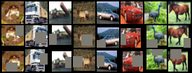
Following the instruction to prefer the configuration with the best accuracy, the model is trained with the best configuration found in Q2 (see Q4). That is the 150-epoch run of the epochs sweep, W&B run p78f6vr6:
| activation | BatchNorm | optimizer | lr | momentum | weight decay | LR schedule | batch size | epochs | seed |
|---|---|---|---|---|---|---|---|---|---|
| ReLU | yes | Nesterov-SGD | 0.1 | 0.9 | 5e-4 | cosine to 0 | 128 | 150 | 42 |
Command: python -m src.train --config configs/best.yaml. For reference, the initial baseline (configs/baseline.yaml: SGD, lr 0.05, 100 epochs) reached 88.64% validation and 87.67% test accuracy.
python -m src.evaluate --checkpoint checkpoints/best_model.pth gives the same numbers.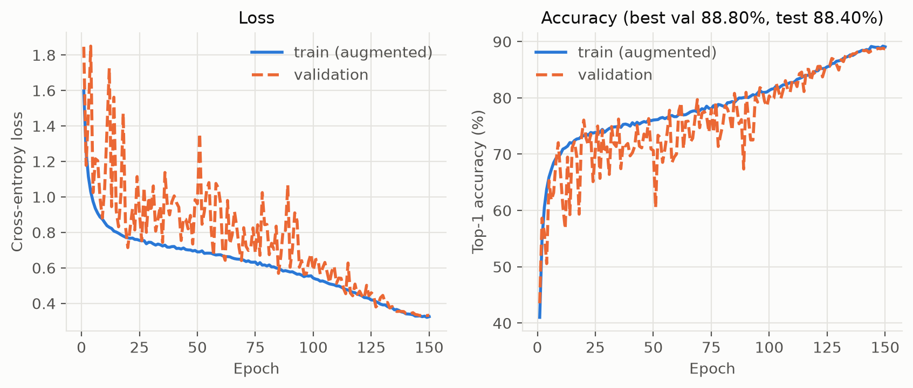
Training accuracy stays at or slightly below validation accuracy for almost the whole run, because it is measured on augmented images with Cutout. The final gap is about 0.3 points (89.06% train vs 88.68% validation at the last epoch). The network is therefore not overfitting: with 262k parameters it is capacity-limited.
Experiment (W&B sweep y9279jnd, 10 runs): a grid over activation ∈ {ReLU, Sigmoid, Tanh, SiLU, GELU} × BatchNorm ∈ {on, off}, with 50 epochs and all other hyperparameters at the defaults. BatchNorm is included because it largely hides the differences between activations, so turning it off shows each activation's own behaviour.
| Activation | BN on: val | BN on: test | BN off: val | BN off: test | Val @ epoch 10 (BN on / off) | First epoch ≥ 80% (BN on / off) | Final train loss (BN on) |
|---|---|---|---|---|---|---|---|
| ReLU | 86.94 | 86.11 | 85.76 | 84.96 | 56.2 / 71.1 | 34 / 22 | 0.417 |
| GELU | 86.92 | 85.93 | 85.94 | 84.62 | 73.4 / 73.2 | 26 / 22 | 0.417 |
| SiLU | 86.08 | 85.13 | 86.06 | 84.93 | 71.7 / 73.4 | 31 / 22 | 0.469 |
| Tanh | 77.12 | 75.99 | 76.36 | 75.20 | 45.1 / 64.0 | never / never | 0.728 |
| Sigmoid | 67.16 | 65.79 | 10.60 | 10.00 | 29.8 / 9.9 | never / never | 1.035 |
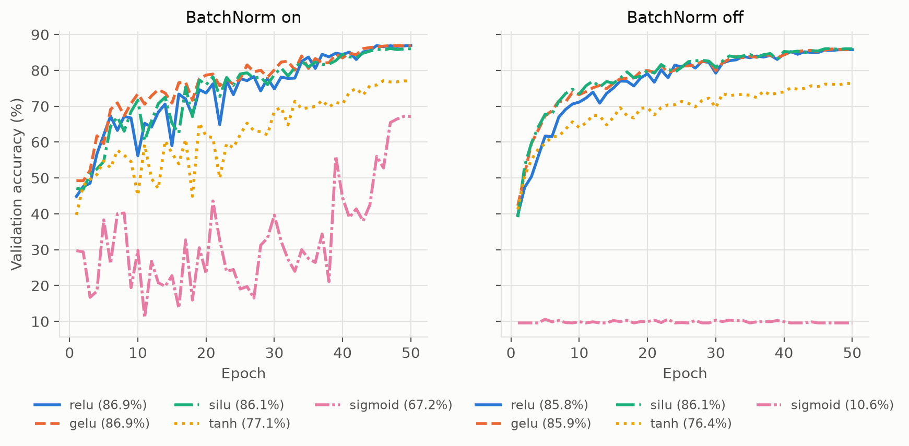
Experiment (sweep mc9888go, 24 runs): optimizer ∈ {SGD, Nesterov-SGD, Adam, Adagrad, RMSprop, Nadam} × lr ∈ {0.1, 0.01, 0.001, 0.0001}, using ReLU with BN for 50 epochs. Each optimizer has a different natural LR range, so they are compared at their own best LR. Momentum 0.9 applies to SGD and Nesterov, the adaptive methods use PyTorch defaults (β₁ = 0.9, β₂ = 0.999 for Adam and Nadam; α = 0.99 for RMSprop), and every optimizer uses L2 weight decay of 5e-4.
| Optimizer | Best lr | Best val | Test | Val @ ep 5 | Val @ ep 10 | First epoch ≥ 80% | First epoch ≥ 85% | Val noise* |
|---|---|---|---|---|---|---|---|---|
| Nesterov-SGD | 0.1 | 87.56 | 86.57 | 64.3 | 67.0 | 33 | 44 | 4.1 |
| SGD (momentum) | 0.1 | 86.94 | 86.74 | 57.3 | 61.6 | 34 | 44 | 5.2 |
| Nadam | 0.001 | 86.20 | 85.17 | 63.1 | 70.1 | 25 | 37 | 4.2 |
| Adam | 0.001 | 85.94 | 85.47 | 58.4 | 73.3 | 25 | 39 | 3.9 |
| RMSprop | 0.001 | 85.90 | 84.93 | 64.6 | 61.3 | 28 | 44 | 6.9 |
| Adagrad | 0.1 | 84.88 | 83.91 | 59.4 | 65.3 | 26 | never | 4.9 |
*Mean absolute epoch-to-epoch change in validation accuracy over the first 25 epochs (higher means a more erratic trajectory).
| Best val accuracy at lr | SGD | Nesterov | Adam | Adagrad | RMSprop | Nadam |
|---|---|---|---|---|---|---|
| 0.1 | 86.94 | 87.56 | 45.88 | 84.88 | 27.30 | 45.40 |
| 0.01 | 82.94 | 82.92 | 79.08 | 79.02 | 77.00 | 80.48 |
| 0.001 | 67.72 | 67.90 | 85.94 | 59.92 | 85.90 | 86.20 |
| 0.0001 | 46.94 | 46.96 | 72.70 | 40.08 | 72.26 | 72.64 |
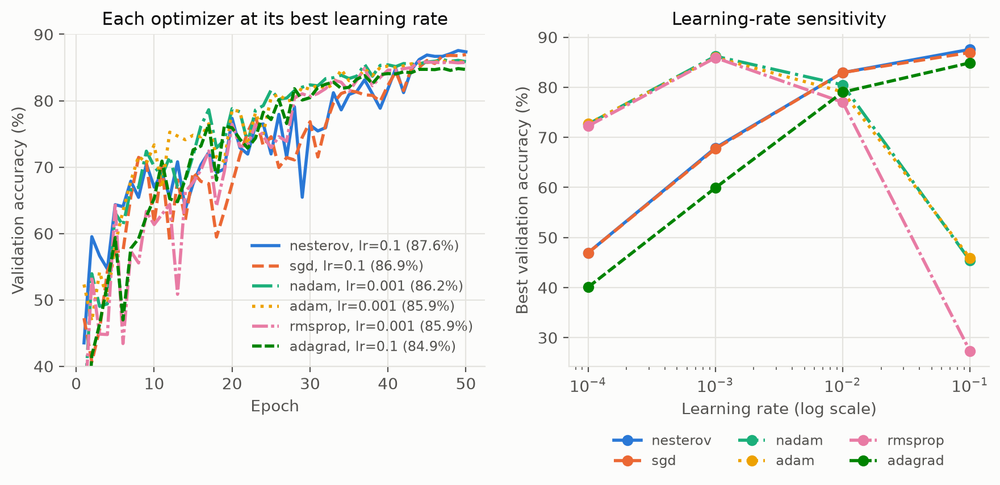
How each optimizer affects convergence:
Summary of the differences. The SGD-type optimizers (SGD, Nesterov) are slow at first but reach the highest final and test accuracy, provided the LR is large. The adaptive optimizers (Adam, Nadam, RMSprop) reach good accuracy two to three times sooner in epochs and work at small LRs, but they are sensitive to the LR and finish slightly lower. Among them, momentum and bias correction (Adam, Nadam) make training far smoother than RMSprop. Adagrad's ever-shrinking step size makes it the weakest for long training. Nesterov-SGD at lr 0.1 was selected for Q2(c).
Experiments: sweep qtfqhv8y (20 runs) is a grid of batch size ∈ {32, 64, 128, 256, 512} × lr ∈ {0.01, 0.05, 0.1, 0.2} at 50 epochs. Sweep vvd87d3w (5 runs) varies epochs ∈ {10, 20, 50, 100, 150} at batch size 128 and lr 0.1. Both use ReLU, BN and Nesterov-SGD with a cosine schedule.
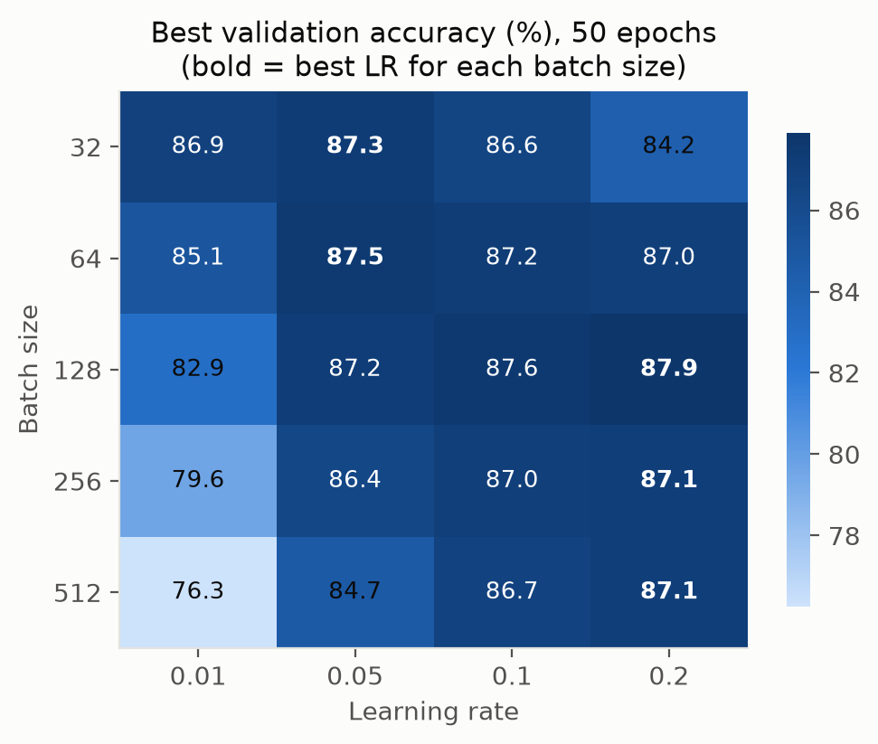
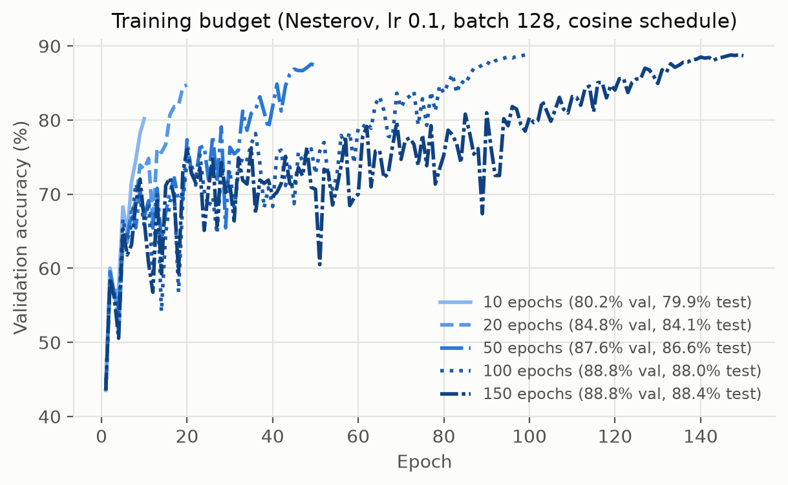
| Batch size (steps/epoch) | Best lr | Best val | Val at lr 0.01 | First epoch ≥ 80% at best lr | Optimizer steps to 80% |
|---|---|---|---|---|---|
| 32 (1,407) | 0.05 | 87.28 | 86.86 | 36 | 50,652 |
| 64 (704) | 0.05 | 87.52 | 85.14 | 34 | 23,936 |
| 128 (352) | 0.2 | 87.90 | 82.92 | 40 | 14,080 |
| 256 (176) | 0.2 | 87.12 | 79.58 | 36 | 6,336 |
| 512 (88) | 0.2 | 87.10 | 76.26 | 32 | 2,816 |
| Epochs (bs 128, lr 0.1) | 10 | 20 | 50 | 100 | 150 |
|---|---|---|---|---|---|
| Best val accuracy | 80.18 | 84.76 | 87.56 | 88.80 | 88.80 |
| Test accuracy | 79.90 | 84.06 | 86.57 | 87.98 | 88.40 |
| Final train loss | 0.681 | 0.532 | 0.408 | 0.350 | 0.325 |
| First epoch ≥ 80% val | 10 | 16 | 33 | 64 | 85 |
Learning rate and batch size interact.
Number of epochs. More epochs give a higher final accuracy, with clearly diminishing returns: +4.6 points from 10 to 20 epochs, +2.8 from 20 to 50, +1.2 from 50 to 100, and none from 100 to 150 in validation accuracy (+0.4 in test accuracy, with a lower training loss). Each extra epoch costs the same compute, so 150 epochs cost three times as much as 50 for +1.2 validation points. Because the cosine schedule anneals the LR to 0 at the end of each budget, every run achieves its best accuracy in its final epochs. A longer budget keeps the LR high for longer, so at any given epoch its accuracy is lower (the 150-epoch run only passes 80% at epoch 85, while the 10-epoch run is at 80.2% by epoch 10), but it ends at a better optimum. The gap between training and validation accuracy stays below 0.4 points even at 150 epochs, so longer training was not limited by overfitting.
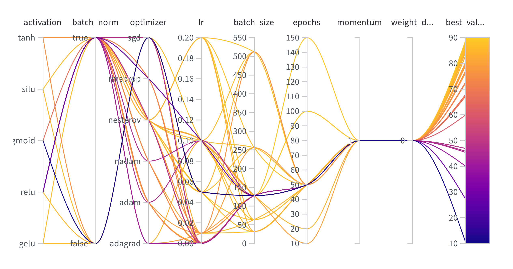
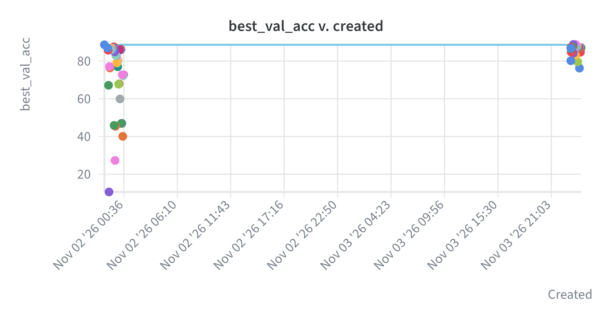
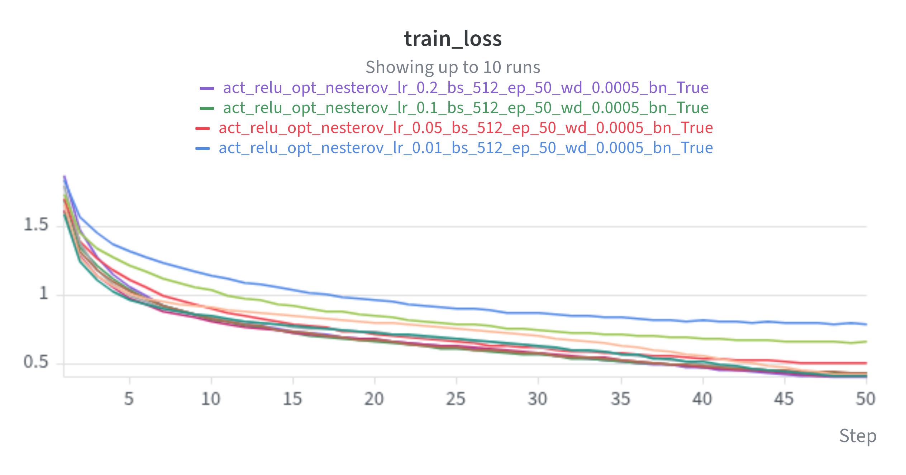
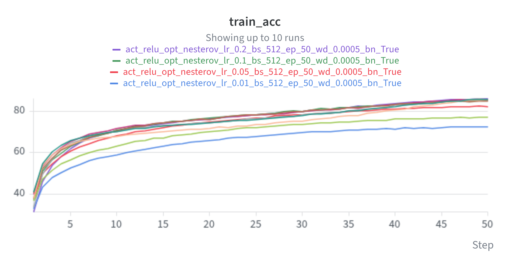
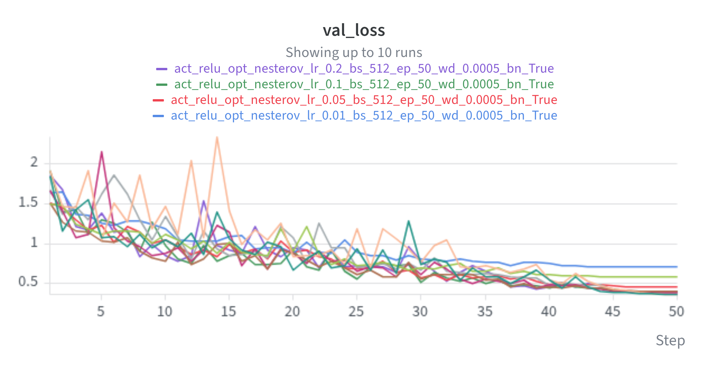
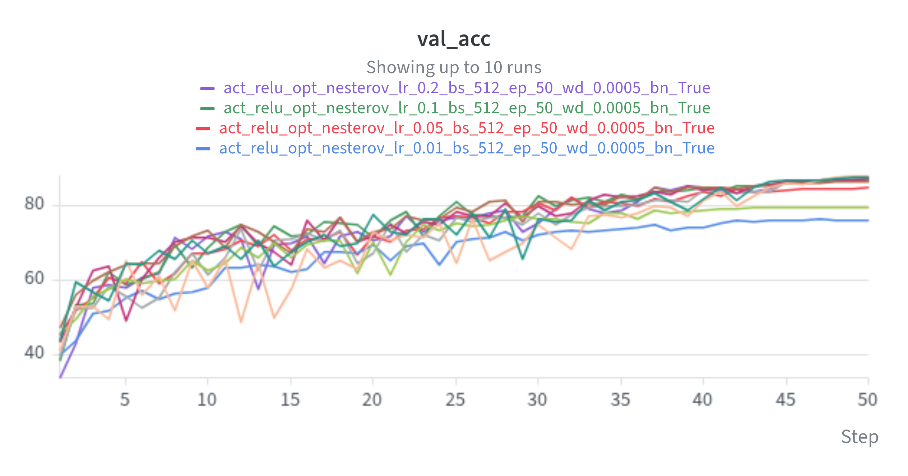
Figures 9–12 are W&B line charts with step = epoch, showing up to 10 runs of the batch size × learning rate sweep. The lowest-accuracy, highest-loss curve is batch 512 at lr 0.01 (underfitting), and the runs at lr 0.1–0.2 give the highest curves.
The configuration with the best validation accuracy in the W&B parallel-coordinates plot is run p78f6vr6 (sweep q2c_epochs):
| activation | batch_norm | optimizer | lr | momentum | weight_decay | scheduler | batch_size | epochs | augmentation | seed |
|---|---|---|---|---|---|---|---|---|---|---|
| relu | true | nesterov | 0.1 | 0.9 | 5e-4 | cosine | 128 | 150 | crop + flip + cutout | 42 |
python -m src.train --config configs/best.yaml # re-train this configuration python -m src.evaluate --checkpoint checkpoints/best_model.pth # evaluate the submitted weights
Reproducibility verified. The configuration was retrained from scratch with the command above. It reproduced the original run exactly: best validation 88.80% at epoch 149, test 88.40%, and identical final-epoch metrics (train loss 0.3254, train acc 89.06%, val loss 0.3333, val acc 88.68%). In addition, the 50-epoch version of this configuration appears in three separate sweeps, and all three runs, trained while other jobs shared the GPU, gave exactly 87.56% validation and 86.57% test accuracy. (The 100-epoch run of the same configuration tied on validation accuracy at 88.80%. The 150-epoch run is the one reported because its test accuracy is higher.)
GitHub repository: https://github.com/cs25m503-sudo/vgg6-cifar10
| File | Responsibility |
|---|---|
src/data.py | Normalization statistics, transforms, Cutout, seeded 45k/5k/10k split, DataLoaders |
src/model.py | VGG6 (template architecture) with selectable activation and optional BatchNorm |
src/utils.py | Seeding, optimizer factory (6 optimizers), LR scheduler, checkpoint save/load |
src/train.py | Training loop, W&B logging, best-checkpoint saving; standalone or as a W&B sweep agent |
src/evaluate.py | Evaluation (loss, top-1 accuracy), and a CLI that tests any saved checkpoint |
src/plot_results.py | Regenerates the report figures for Q1 and Q2 from the W&B runs |
configs/*.yaml, sweeps/*.yaml | Baseline and best configurations, and the four W&B sweep definitions |
Training and evaluation are kept separate: train.py imports evaluate() from evaluate.py, and evaluate.py runs independently on a saved checkpoint without W&B.
The repository README lists the exact setup and run commands for every question, the environment (Ubuntu with Linux 7.0, Python 3.12.3, torch 2.14.1+cu126, torchvision 0.29.1, wandb 0.31.0, CUDA 12.6, RTX 4090 Laptop GPU) and all dependency versions (requirements.txt). The seed configuration is: seed 42 for Python, NumPy and PyTorch (CPU and CUDA); cudnn.deterministic = True and cudnn.benchmark = False; a seeded validation split; a seeded DataLoader shuffle; and seeded DataLoader workers.
The trained weights of the best configuration are in the repository at checkpoints/best_model.pth. The checkpoint contains the configuration needed to rebuild the model, and python -m src.evaluate reproduces 88.80% validation and 88.40% test accuracy from it.